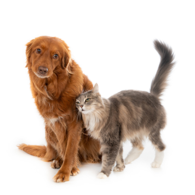

🐾 Quem somos?
Criada em 2009, a APAD é uma associação dedicada a proteção dos animais desamparados da cidade de Rio do Sul-SC. A ONG é sem fins lucrativos e composta integralmente por voluntários, tendo viabilidade por meio de doações.
🐾 Como funciona a ONG?
Os trabalhos realizados pela APAD são exclusivamente para animais desamparados, que estejam em situação de risco, como:
🟠 Atropelados
🟠 Doentes
🟠 Fêmeas no cio
🟠 Filhotes abandonados
🟠 Vítimas de maus-tratos

🐾 Como posso ajudar?
Sendo voluntário, fazendo o transporte dos cães para as clínicas veterinárias ou os resgatando em situação de risco.
Através da doação de ração, medicação, produtos de limpeza, cobertas, casinhas, assim como doações de dinheiro através das caixinhas espalhadas pela cidade ou via depósito bancário.
Sendo um lar temporário enquanto o animalzinho não encontra um adotante.
💰 Chave PIX: 11.356.234/0001-92